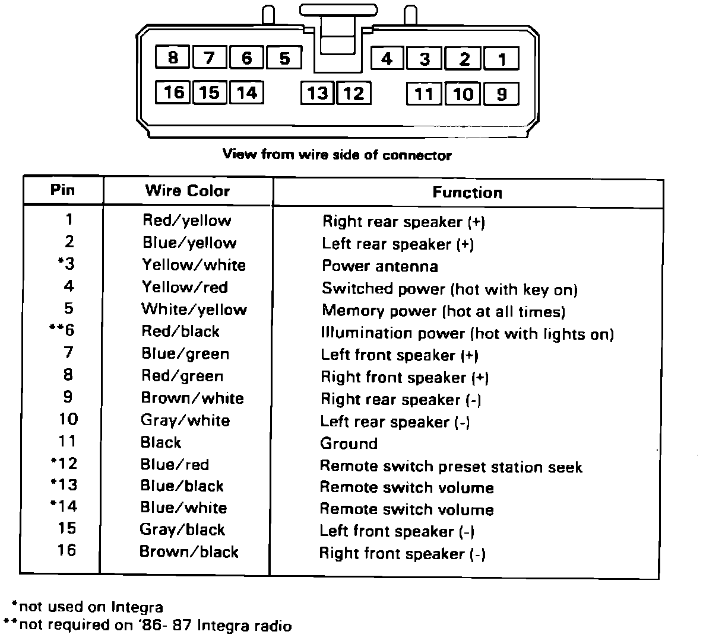

Audio System - Replacement Radio Repair Harness
August 31, 1987BULLETIN NO. 87-024
YEAR '86-88
MODEL ALL EXCEPT LEGEND COUPE LS
APPLICATION ALL
Replacement Radio Repair Harness
A radio wire harness is now available to repair damaged wire harnesses.
The repair harness consists of a 16 pin connector with color matched wires that can be spliced to the damaged harness. eliminating the need to replace the vehicle's wire harness. The repair harness can be used on all '86-88 Acura models. except Legend Coupe LS.
NOTE:
There will be four unused wires when used on the Integra. This repair harness is not intended for use with Bose system radios.

To connect the repair harness to the damaged wire harness, cut the repair harness to the length needed. Attach wires using crimp connectors from the wire terminal kit listed.
PARTS INFORMATION
Repair Harness: AE-94T91063F01
Terminal Kit: 07692-0010000